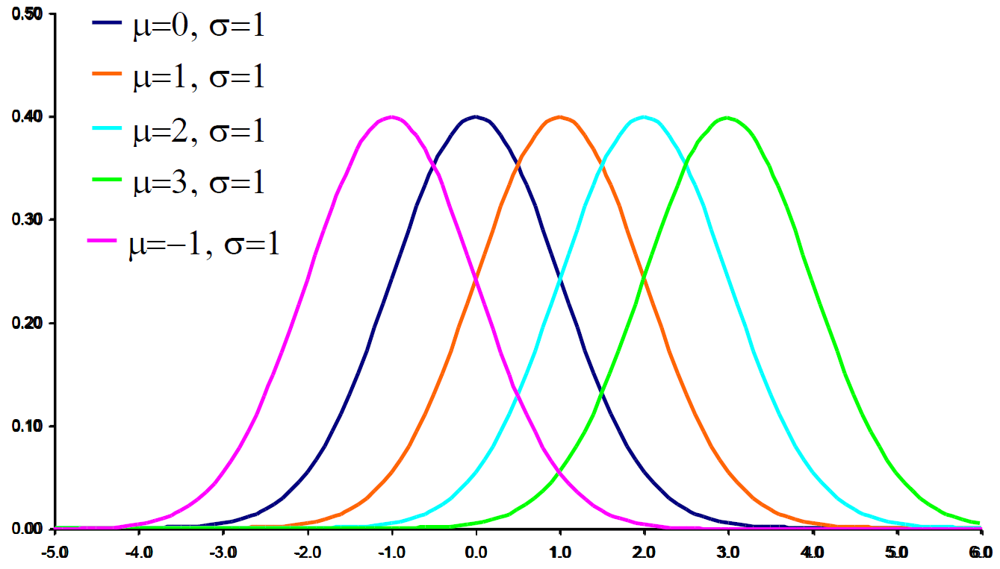
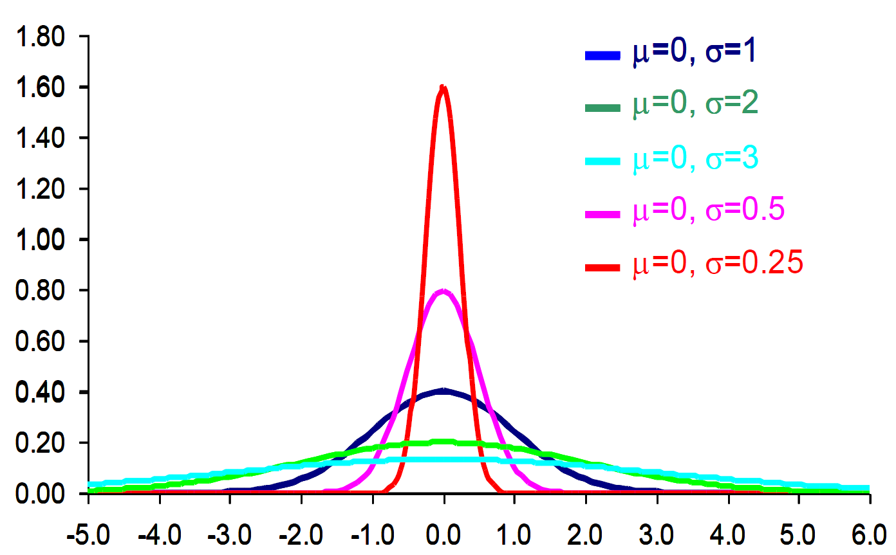
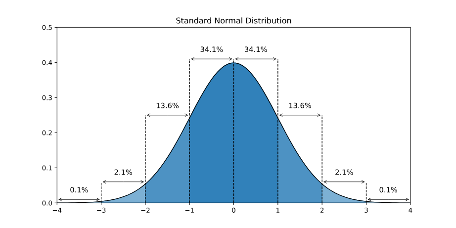

This formula generates the normal probability distribution,
f(x)=σ2π1e−21(σx−μ)2,for −∞<x<∞
e=2.7183,π=3.1416
In this equation hold two parameters, mean μ and standard deviation
σ that completely
determine the normal distribution. The shape and location of normal curve changes as the mean and
standard deviation change.
Changes in Mean (Location)

The mean μ of a normal distribution
represents the central location of the data. Changing the mean shifts the entire probability density
function (PDF) along the horizontal axis without altering its shape or spread. A larger μ shifts the distribution
to the right. A smaller μ shifts the distribution
to the left. The overall shape and spread (determined by the standard deviation σ) remain
unchanged. The probability of events occurring in a particular range changes.
Changes in Shape (Standard Deviation)

This image displays multiple normal distribution curves with the same mean (μ=0) but different standard deviations
(σ). The effect of
changing σ (spread) is
evident in the shape and height of the curves.
Large σ
(High Variance)
Data points are more spread out.
More variability in the dataset.
Higher probability of extreme values (tails become wider).
Small σ
(Low Variance)
Data points are closer to the mean.
Less variability in the dataset.
The probability mass is concentrated near the mean.
Understanding variance helps in analyzing the consistency of data. Smaller variance means more precise
predictions, while larger variance indicates uncertainty.
The Standard Normal z Distribution

Mathematically, a normal distribution is given by its probability density function (PDF):
f(x)=σ2π1e−21(σx−μ)2,for −∞<x<∞
For the standard normal distribution, we set μ=0 and σ=1, simplifying the equation to:
f(x)=σ2π1e−21(x)2,for −∞<x<∞
where z is the
standardized value (z-score).
Z Score
A z-score (or standard score) tells us how far a value is from the mean, measured in standard deviations.
z=σx−μ
For a standard normal distribution (μ=0,σ=1), this simplifies to: z=x
Z score aims to standardized x value when the normal distribution is not a standard normal
distribution.
If z>0, the value is
above the mean.
If z<0, the value is
below the mean.
If z=0, the value is equal
to the mean.
Properties of the Standard Normal
Distribution
The Standard Normal z
Distribution is a special case of the normal distribution where μ=0 and σ=1.
Symmetric around z=0: Values to the
left of the center are negative, and values to the right are positive.
Total area under the curve = 1: Represents a probability distribution.
Equal area on both sides: Since the curve is symmetric, each half has an area of
0.5.
68-95-99.7 Rule:
68% of values lie within 1σ:
−1≤z≤1.
95% of values lie within 2σ:
−2≤z≤2.
99.7% of values lie within 3σ:
−3≤z≤3.
Method of Probability Calculation
The probability is calculated using the Z-score and the cumulative distribution
function (CDF).
1. Finding Probability Using the Z-score
The probability of a value x occurring in a normal
distribution is found using the Z-score formula
Once the Z-score is obtained, the probability is found using the cumulative
distribution function (CDF):
P(X≤x)=Φ(z)
where Φ(z) is the cumulative
probability from the standard normal table (Z-table) or calculated using statistical
functions.
2. Types of Probability Calculations
There are different types of probability calculations for the standard normal distribution:
a) P(X≤x) → Left-tail
probability
This is the probability that X is less
than or equal to a certain value.
Using the Z-table or a calculator:
P(X≤x)=Φ(z)
Example: If z=1.5, then from the Z-table:
P(X≤1.5)=0.9332
b) P(X≥x) → Right-tail
probability
This is the probability that X is
greater than or equal to a certain value.
P(X≥x)=1−Φ(z)
Example: If z=1.5, then:
P(X≥1.5)=1−0.9332=0.0668
c) P(a≤X≤b) → Probability between two
values
To find the probability that X lies between two
values a and b:
P(a≤X≤b)=Φ(zb)−Φ(za)
Example: Find P(0≤X≤1.2):
Convert to Z-scores:
z0=10−0=0 → Φ(0)=0.5
z1.2=11.2−0=1.2 → Φ(1.2)=0.8849
Compute probability:
P(0≤X≤1.2)=0.8849−0.5=0.3849
Thus, the probability is 0.3849 (or 38.49%).
Unimodal Data Pattern
A unimodal data pattern refers to a dataset where the distribution has only one
peak (mode). This means that most of the data is concentrated around a single central
value.
Key Characteristics of Unimodal Data:
Single Peak
The distribution has only one highest point (mode).
This peak represents the most frequent data value or range.
Symmetry or Skewness
The distribution can be symmetric (e.g., normal distribution) or
skewed (left or right).
A symmetric unimodal distribution means that the data is evenly
spread around the peak.
A skewed unimodal distribution means that data is concentrated on one
side, with a longer tail on the other.
Measures of Central Tendency
The mean, median, and mode are typically close to each other in a
symmetric unimodal distribution.
In a skewed distribution, the mean is pulled in the direction of the skew.
Examples of Unimodal Data:
Normal Distribution (Gaussian Curve)
A bell-shaped curve where data is symmetrically distributed around
the mean.
Example: Heights of people, test scores.
Right-Skewed (Positively Skewed) Distribution
The peak is on the left, and the tail extends to the right.
Example: Income distribution, housing prices.
Left-Skewed (Negatively Skewed) Distribution
The peak is on the right, and the tail extends to the left.
Example: Age at retirement, time taken to complete a task.